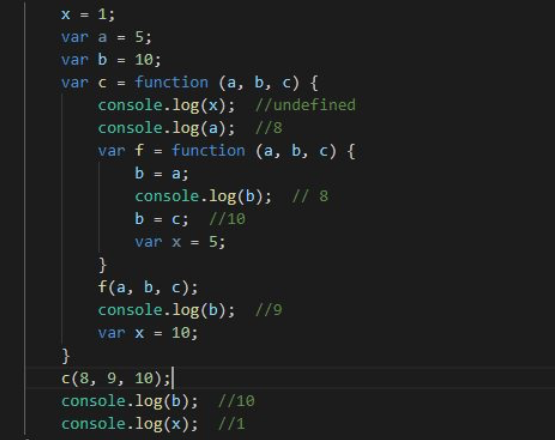
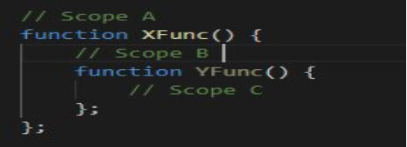
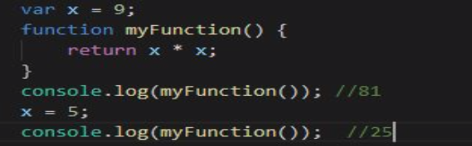
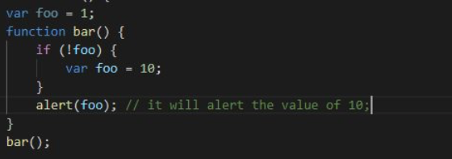
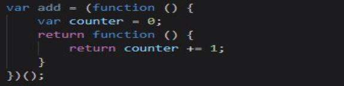
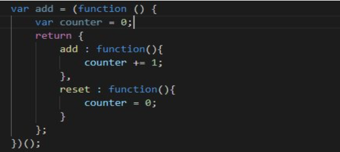
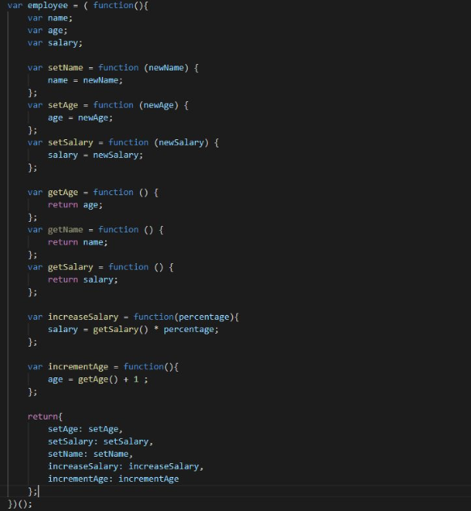
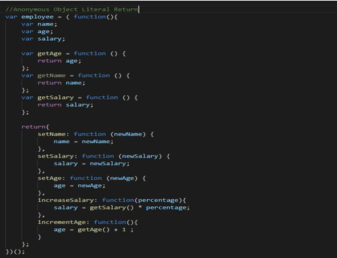
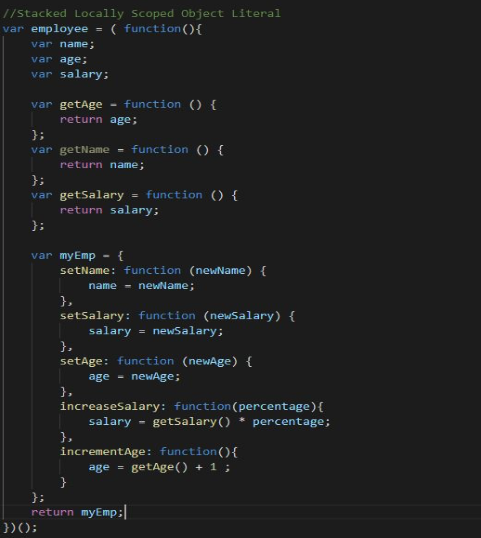
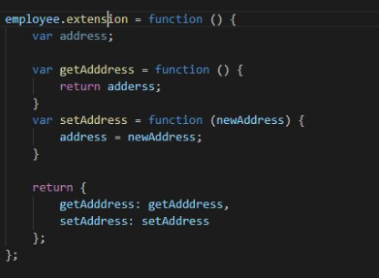

-
Determine what this Javascript code will print out (without running it):

-
Define local and global scope in java script?
If a variable is defined outside the function and thus can be accessed globally by the scope,
this is known as global scope.
If a variable is defined inside the function and thus can only be accessed locally by the
scope, this is known as local scope.
-
Consider the following structure of JavaScript code:

- Do statements in Scope A have access to variables defined in Scope B and C? No
- Do statements in Scope B have access to variables defined in Scope A? Yes
- Do statements in Scope B have access to variables defined in Scope C? No
- Do statements in Scope C have access to variables defined in Scope A? Yes
- Do statements in Scope C have access to variables defined in Scope B? Yes
-
What will be printed by the following (answer without running)

-
What will the alert print out (Remember the hoisting)

-
Consider the following definition of an add() function to increment a counter variable:

Modify the above module to define a count object with two methods: add() and reset( ).
The count.add( ) method adds one to the counter (as above). The count.reset( ) method
sets the counter to 0

-
In the definition of add( ) shown in question 6, identify the "free" variable. In the context
of a function closure, what is a "free" variable?
"counter" is a free variable.
In the term of a function closure, a free variable is a closure variable that can be used all
over the closure itself but is not part of a global namespace.
-
The add( ) function defined in question 6 always adds 1 to the counter each time it is
called. Write a definition of a function make_adder(inc), whose return value is an add
function with increment value inc (instead of 1). Here is an example of using this
function:
add5 = make_adder(5);
add5( ); add5( ); add5( ); // final counter value is 15
add7 = make_adder(7);
add7( ); add7( ); add7( ); // final counter value is 21
-
Suppose you are given a file of JavaScript code containing a list of many function and
variable declarations. All of these function and variable names will be added to the
Global JavaScript namespace. What simple modification to the JavaScript file can remove
all the names from the Global namespace?
The simplest way is to wrap the JavaScript code in a closure and manually expose only those
variables we require globally to the global scope.
- Using the Revealing Module Pattern, write a JavaScript definition of a Module that
creates an Employee Object with the following fields and methods:
Private Field: name
Private Field: age
Private Field: salary
Public Method: setAge(newAge)
Public Method: setSalary(newSalary)
Public Method: setName(newName)
Private Method: getAge( )
Private Method: getSalary( )
Private Method: getName( )
Public Method: increaseSalary(percentage) // uses private getSalary( )
Public Method: incrementAge( ) // uses private getAge( )

-
Rewrite your answer to Question 10 using the Anonymous Object Literal Return Pattern

-
Rewrite your answer to Question 10 using the Stacked Locally Scoped Object Literal
Pattern.

-
Write a few JavaScript instructions to extend the Module of Question 10 to have a public
address field and public methods setAddress(newAddress) and getAddress( )
